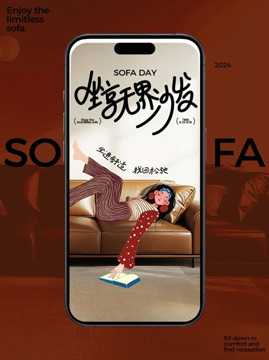

沙发节
家享生活 · 系列插画与动态 / 2024

MOTION / SOFA & EMOTION
坐享无界沙发
把沙发放进不同的生活情绪，让人物姿态、配色与商品共同组成四款系列画面。
- 系列
- GINGER / GREEN / KHAKI / VERMILION
- 呈现
- 动态 / 系列海报 / 手机应用
四色情绪 · 系列海报
四张海报放在同一系列中，保持活动信息与版式一致，以配色和人物状态形成变化。
家享生活 · 系列插画与动态 / 2024

MOTION / SOFA & EMOTION
把沙发放进不同的生活情绪，让人物姿态、配色与商品共同组成四款系列画面。
四张海报放在同一系列中，保持活动信息与版式一致，以配色和人物状态形成变化。